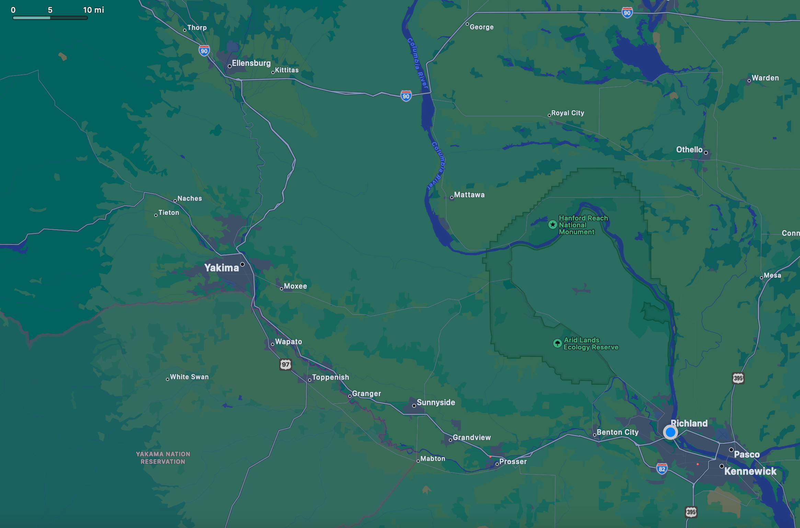

Trial Run

Casper and I are going to do a trial run this week, pushing my dead motorcycle to the nearest gas station, praying, begging for gas money, going to the next town my motorcycle can reach (hopefully Yakima), praying again and finding someone to pray with, begging for gas money to make it to Ellensburg, finding someone to pray with there, then doing the same thing to return back to Richland. If all fails, I have a $20 back up bill from church that will get me and Casper home safely. Mileage distance between Richland and Ellensburg is approximately 115 miles, and the round trip is about 230 miles.
| Destination |
Time |
| WA: Richland - start | |
| WA: Yakima | 1h 30m |
| WA: Ellensburg | 1h 15m |
| WA: Yakima | 1h 15m |
| WY: Richland | 1h 30m |